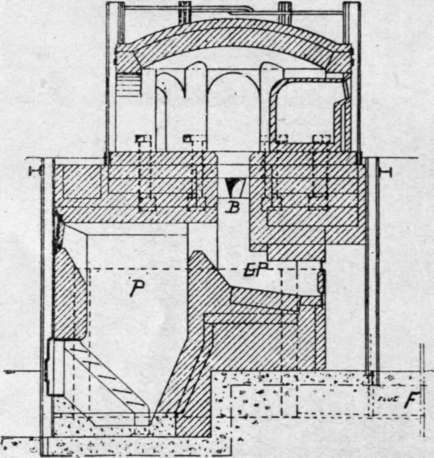
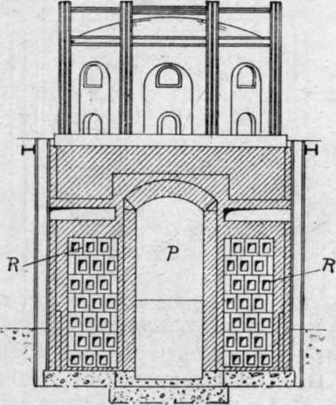
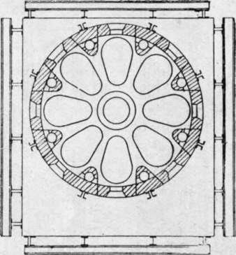

Glass House Furnaces. Part 3
Description
This section is from the book "Glass And Glass Manufacture", by Percival Marson. Also available from Amazon: Glass and Glass Manufacture.
Glass House Furnaces. Part 3
The Hermansen furnace, like the Siemens furnace, is producer gas-fired. The gas producer is built within the body of the furnace, (P) below the glass house floor. On either side of this gas producer the recuperators are situated. These are constructed by an arrangement of fire-clay tubes, designed to give two distinct continuous channels, the one horizontal and the other vertical. The vertical channels are connected with the atmosphere and supply the air necessary for combustion. The horizontal channels (R) are the flues through which the hot waste products of combustion are continually being drawn from the furnace by the stack. It will be evident that, the horizontal channels being intermediate to the vertical tubes, the waste heat is continually being absorbed by the air travelling inwards. In other words, the air is pre-heated by passing through flues which are surrounded by the hot waste gases. Therefore, in this type of furnace there is no necessity for reversing the currents to procure the necessary preheated air for combustion, and the regulation of the furnace heat becomes a simple matter of controlling the draught by means of the dampers provided in the main flue. In this type of furnace the glass is melted nightly; open or covered pots may be used, the capacity of which varies between 5 and 12 cwts., according to the class of glassware manufactured. The furnace is designed in four, six, and eight pot types, and several are now working in this country. These Hermansen furnaces are capable of producing 20 tons of metal, with a fuel consumption of 16 tons.
A. Hermansen's Continuous Recuperative Glass-Melting Furnace - Sectional Elevation
P. Producer. B. Burner. G.P. Glass Pocket.
B. Hermansen Furnace - Cross Section through Gas Producer.
P. Gas Producer. R. Recuperators.
The Hermansen Continuous Recuperative Furnace is the most efficient furnace known to the writer. It is easier to control than the regenerative types. Being compact, it takes up little space and is easy to repair, and its life well surpasses other types. The initial outlay and cost of erection varies from £850 to £1,200. The combustion in this type of furnace is so perfect that it is used with open crucible pots for melting lead crystal glasses. On the Continent this furnace is in general use for all types of glassware, and, from the amount of glass it will melt, its efficiency is greater than the regenerative type.
Plan Of Hermansen's Furnace (Eight Pot Type)
Tank Furnaces are at present used for the melting of the commoner and cheaper types of glass. They are so constructed as to contain a single rectangular-shaped compartment, or tank, about 18 in. to 2 ft. deep, and from 30 to 100 ft. long. The bed and retaining walls of this tank are constructed of specially selected fireclay blocks; no pots are used. Tank furnaces are simple and melt the glass economically, but the metal produced is not nearly so good a quality as pot metal.
Tank furnaces are chiefly used for making the cheaper glasswares, such as wine, stout, and beer bottles, gum bottles, ink-pots, sauce bottles, and like goods, where a large production is essential. Improvements are continually taking place in the design of this type of furnace, and much finer and clearer metals are being produced. It is quite probable that in the future tanks will be preferred for making cast plate and sheet window glass, as a larger body of metal is held by them when compared with pot furnaces. Like the Siemens and Her-mansen furnaces, they are gas-fired, but the port-holes by which the gas and air are introduced and the products of combustion are withdrawn from the melting chamber, are situated on either side, above the level of the metal, whilst the glass blowers work at one end of the furnace. The melting and working of the metal is continuous. The tank is divided by a shallow bridge, which is partially submerged and situated midway between the two ends of the furnace, dividing it into two sections, respectively the melting and working compartments. This bridge keeps back all unmolten material and allows only that portion which is melted to travel forward to the working compartment. The tank is crowned or arched over, and at the working end openings are provided to enable the glass workers to gather the metal from within. Small rings, or syphons, are used, which, floating on the metal, serve further to refine the glass as it is gradually used. The batch mixture is filled through a convenient opening near to the portholes. Tank furnaces vary in capacity. Some have been constructed to give an output of 300 tons of glass a week. This pace can only be kept up with the aid of automatic bottle-making machinery; in which case hand labour is practically eliminated.
Liquid fuel or oil-fired glass furnaces have not proved a success, being very costly in repairs on account of the local heating effects of the flames issuing from the burners vaporising the oil.
Electric furnaces for glass-melting have been tried with partial success. These are expensive in maintenance compared with their efficiency in producing glass.
Continue to:
- prev: Glass House Furnaces. Part 2
- Table of Contents
- next: Chapter IX. Glass-Melting Pots And Their Manufacture
Tags
glass, manufacturing technology, furnace, glassware, wine glass